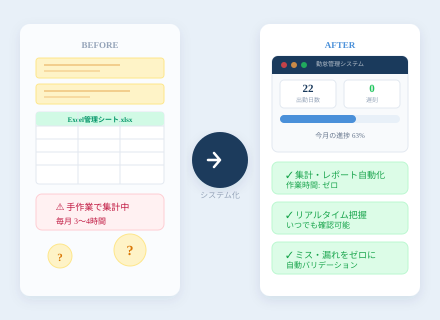
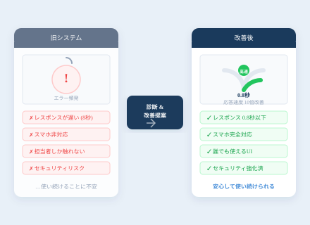
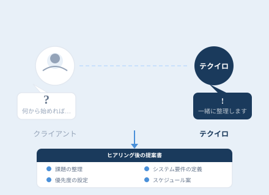

Services
サービス
システムは手段です。本当に解決したい課題を一緒に整理するところから始めます。

Service 01
業務に合わせた
業務に合わせた
システム開発
「Excelでの管理が限界になってきた」「同じ入力作業を毎日繰り返している」——そういった現場の不便を、ちょうどいい規模のシステムで解決します。必要以上に高機能なものは作りません。
- 要件定義・業務フロー整理から対応
- スマートフォン・PC どちらからでも利用可能
- 既存ツール（Google Workspace / Slack 等）との連携
- リリース後の運用保守まで一貫対応

Service 02
既存システムの
既存システムの
改善・最適化
「動いているが遅い」「使いにくいが変更できない」「担当者しか触れない」——そういった既存システムの問題を診断し、最小限の変更で最大の改善を図ります。
- 現状コードの診断・問題箇所の特定から開始
- 壊さずに改善する段階的アプローチ
- 改善前後の効果を数値で確認できる
- 「作り直し」か「改修」かの判断も含めて提案

Service 03
構想段階からの
構想段階からの
相談・サポート
「システムが本当に必要か」から一緒に考えます。何をどう作るか決まっていなくても大丈夫。ヒアリングを通じて課題を整理し、必要なものと不要なものを仕分けした上で提案します。
- 「システムを作らない」という選択肢も含めて提案
- Excel・既存ツールで代替できる場合は正直に伝える
- ヒアリング後に課題整理・概算見積もりを提示
- そのまま開発依頼しなくても構わない
Flow
進め方
01
無料ヒアリング
現状の課題と「本当に解決したいこと」を一緒に整理します。
02
要件整理・提案
開発範囲・スケジュール・概算費用を整理してご提案します。
03
開発・実装
定期的に進捗を共有しながら開発を進めます。途中変更も相談可。
04
テスト・確認
実際に使っていただきながらフィードバックをもとに調整します。
05
納品・運用保守
リリース後も担当者変わらず継続サポート。安心して使い続けられます。